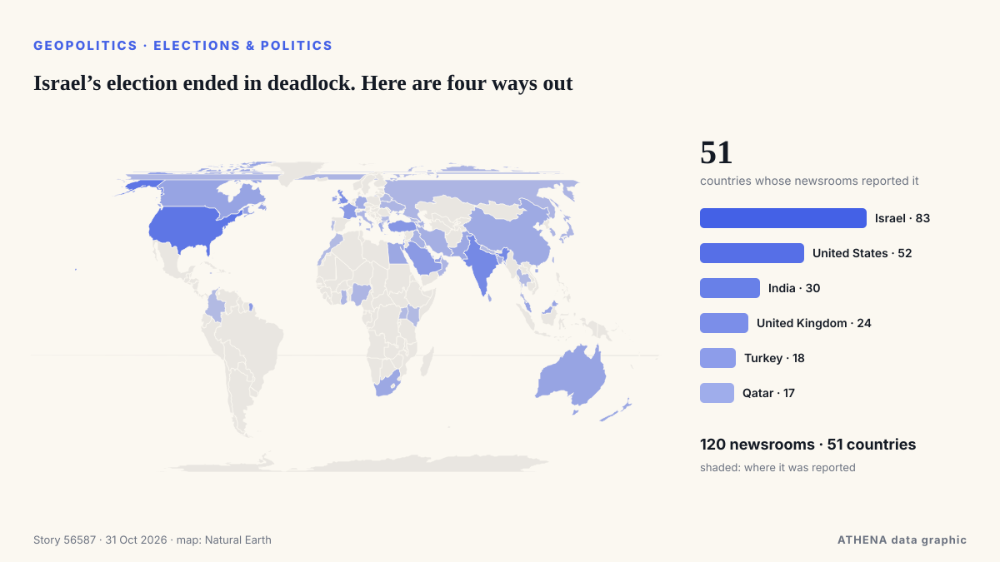

Israel’s election ended in deadlock. Here are four ways out

LONDON: It is a measure of how much is at stake in Tuesday’s legislative election in Israel, and how finely balanced the outcome might be, that a record 22,000 police officers have been deployed in… von Arab News
Unabhängig gemeldet von 120 Medien in 51 Ländern seit dem 24. Okt., zuerst von Responsible Statecraft; die Berichterstattung breitet sich weiter aus. ATHENA stuft das Risiko als erhöht ein (5.4/10), vor allem wegen der Schwere des beschriebenen Schadens und seiner geografischen und sektoralen Reichweite. Die Konfidenz liegt bei 90 % (hoch): 120 Medien bestätigen es unabhängig, bei einer mittleren Verlässlichkeit der Quellen von 74 %. Wer berichtete: 14 Medien in Israel, 6 Medien in Vereinigte Staaten · United States, 3 Medien in Indien · India. Die Berichterstattung lief von 24. Okt. bis 28. Okt., über 100 Stunden.
Warum es wichtig ist: Sicherheits- und diplomatische Entwicklungen können Bündnisse, Handel und Märkte weit über die direkt beteiligten Länder hinaus verschieben.
Was sich geändert hat: 119 neue Berichte von 64 Redaktionen in den 24 Stunden bis 31. Okt..
Erste Schlagzeile: Israel counts votes with Netanyahu’s future on the line
Schlagzeilen werden auf Englisch angezeigt, wie veröffentlicht.
Auf einen Blick
Ausgewählt, bewertet und geschrieben nach der veröffentlichten Methodik von ATHENA. Kein Redakteur greift in einzelne Ereignisse ein. So entsteht ATHENA ›
| 24 Oct 04:05 UTC | 1 |
|---|---|
| 24 Oct 16:05 UTC | 0 |
| 25 Oct 04:05 UTC | 0 |
| 25 Oct 16:05 UTC | 0 |
| 26 Oct 04:05 UTC | 1 |
| 26 Oct 16:05 UTC | 3 |
| 27 Oct 04:05 UTC | 9 |
| 27 Oct 16:05 UTC | 21 |
| 28 Oct 04:05 UTC | 35 |
| 28 Oct 16:05 UTC | 35 |
| 29 Oct 04:05 UTC | 45 |
| 29 Oct 16:05 UTC | 136 |
| 30 Oct 04:05 UTC | 127 |
| 30 Oct 16:05 UTC | 37 |
| 31 Oct 04:05 UTC | 17 |
| 29 Oct 15:43 UTC | 5.1 |
|---|---|
| 29 Oct 22:07 UTC | 4.7 |
| 29 Oct 22:24 UTC | 5.2 |
| 29 Oct 22:32 UTC | 4.7 |
| 29 Oct 22:48 UTC | 5.2 |
| 29 Oct 23:01 UTC | 4.7 |
| 29 Oct 23:18 UTC | 5.2 |
| 29 Oct 23:20 UTC | 4.7 |
| 29 Oct 23:27 UTC | 5.2 |
| 29 Oct 23:45 UTC | 4.7 |
| 29 Oct 23:46 UTC | 5.2 |
| 30 Oct 06:41 UTC | 4.7 |
| 30 Oct 06:44 UTC | 5.2 |
| 30 Oct 06:48 UTC | 4.7 |
| 30 Oct 07:24 UTC | 5.2 |
| 30 Oct 07:53 UTC | 4.7 |
| 30 Oct 08:06 UTC | 5.2 |
| 30 Oct 18:55 UTC | 4.7 |
| 30 Oct 22:11 UTC | 5.5 |
| 31 Oct 11:14 UTC | 5.4 |
Warum diese Zahlen
Bedeutung
Risiko
Konfidenz
Die Berichterstattung – wer berichtete, und wann
Schlagzeile wie veröffentlicht · öffnet das Original- Responsible Statecraft · Vereinigte Staaten · United StatesWhat Israel's razor thin elections mean for Gaza and Iran
- Responsible Statecraft · Vereinigte Staaten · United StatesMeet the ex-Biden official working hard to rewrite history on Gaza
- Central Banking · Vereinigtes Königreich · United KingdomBank of Israel rebukes Netanyahu over sanction evading crypto plan
- Arab News · Saudi-Arabien · Saudi ArabiaIsrael’s election could reshape its politics, without changing its course on Palestine
- Haaretz (English) · IsraelMy son is back from Gaza. Now it's time to take our country back
- NPR · Vereinigte Staaten · United StatesA quick guide to Israel's high-stakes election
- Anadolu Agency (English) · Türkei · TurkeyIsrael counts votes with Netanyahu’s future on the line
- Türkiye Today · Türkei · TurkeyIsraelis begin voting as Netanyahu faces toughest election challenge in years
- The Jerusalem Post · IsraelActivists urge voters returning to Israel to save emergency hotline numbers in case of arrest
- Kyiv Post · UkraineWhat Israel’s Election Could Change for Ukraine and Relations With Russia
- The Jerusalem Post · IsraelSohlberg bars UTJ turnout reports from polling stations; watchdog urges enforcement
- Haaretz (English) · IsraelThese Palestinians woke up on Election Day still unsure whether to vote or boycott
- The Diplomat · JapanThe Future of India-Israel Ties After Israel’s Election
- Tehran Times · IranIsraeli voters chose between ‘rabid yellow dogs and ravenous jackals’
- Haaretz (English) · IsraelNetanyahu has a sword hanging over his head – and Eisenkot can wield it
- The New Arab · INTBen-Gvir scrambles door-to-door for votes as Arab turnout surges
- Haaretz (English) · IsraelWe found the few Israelis who aren't voting – and are willing to talk about it
- The National · Vereinigte Arabische Emirate · United Arab Emirates'Call me': Israeli right-wing candidates go door to door pleading for votes
- Haaretz (English) · IsraelNetanyahu films campaign ad at Israeli city hall in violation of election law
- Haaretz (English) · IsraelInside the propaganda machine: How Netanyahu's campaign messages spread
- SABC News · Südafrika · South AfricaIsrael election will not change fate of Palestinian people: Mbeki
- NDTV · Indien · IndiaMassive Arab-Israeli Poll Turnout, Netanyahu's "End To Jewish State" Charge
- France 24 English · Frankreich · FranceIbrahim Abu Ahmad on Israeli election: 'Crucial for Arab citizens to have ally in Jewish community'
- The New York Times (World) · Vereinigte Staaten · United StatesIsraeli Voting Ends After Strong Turnout With No Clear Winner
- The New York Times (World) · Vereinigte Staaten · United StatesTwice before, Netanyahu was ousted then returned to power.
- Times of India · Indien · IndiaElection Commision keeps RTI applicant waiting for reply
- Arab News · Saudi-Arabien · Saudi ArabiaIsrael commits ‘mediacide’ to conceal its atrocities in Gaza, UN expert says
- Middle East Eye · INTPalestinian voter mobilisation a ‘truly historic development’, analyst says
- France 24 English · Frankreich · FranceBibi's moment of truth: Israel votes in first general election since October 7 attacks
- Haaretz (English) · IsraelMuted mood on Tel Aviv's streets as voters react to Israel's election exit polls
- Haaretz (English) · IsraelHow will Netanyahu try to reframe his defeat as a huge victory
- Haaretz (English) · IsraelNetanyahu's scare campaign against Arab voters ended up pushing them to the polls
- Haaretz (English) · IsraelDecoding Israel's election: This is the jargon you need to know
- NPR · Vereinigte Staaten · United StatesPartnerships between ICE and local police surge, report finds
- Trinidad Express · Trinidad und Tobago · Trinidad and TobagoAustin Immigration Lawyer Hosts Livestream To Discuss Immigration News & Updates
- Mehr News (English) · IranVIDEO: Boy bids farewell with sister after shooting by Israel
- The Jerusalem Post · IsraelAfter years of war, division, Israelis vote in record numbers to shape their future - editorial
- The Jerusalem Post · IsraelAnti-Netanyahu bloc vows not to let chance to replace government slip away
- Times of India · Indien · India'Whole tide turned': Trump takes credit for Netanyahu's showing in Israel elections
- The Independent · Vereinigtes Königreich · United KingdomTrump takes credit for Netanyahu election performance after endorsing Israeli prime minister